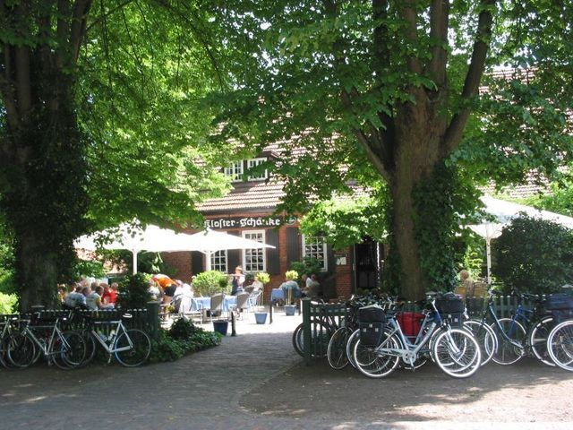

Sie habe keine Audio-Inhalte heruntergeladen. Dies können Sie in den Einstellungen nachholen. Dazu klicken Sie bitte hier und wählen "Download starten".
Hören Sie die Informationen Listen to the information Lustern tau de Toon
Über die Gastronomien About the restaurants ?
Lassen Sie sich doch einfach mal rundum verwöhnen und genießen Sie in Hude das abwechslungsreiche gastronomische Angebot.
Urige Restaurants, moderne Bistros und gemütliche Cafés lassen keine Wünsche offen. Ob kulinarische Leckerbissen, deftige Hausmannskost, norddeutsche Spezialitäten wie „Kohl & Pinkel“ oder einfach mal ein Eis für zwischendurch, hier ist für jeden Geschmack etwas dabei.
Let yourself be pampered and enjoy simple times in Hude a varied gastronomic offer.
Quaint restaurants, modern bistros and cafés newsstands. Whether culinary delights, hearty home cooking, North German specialties such as "Kohl & Pinkel" or just an ice cream in between, here is something for every taste.
Lassen Sie sich doch einfach mal rundum verwöhnen und genießen Sie in Hude das abwechslungsreiche gastronomische Angebot.
Urige Restaurants, moderne Bistros und gemütliche Cafés lassen keine Wünsche offen. Ob kulinarische Leckerbissen, deftige Hausmannskost, norddeutsche Spezialitäten wie „Kohl & Pinkel“ oder einfach mal ein Eis für zwischendurch, hier ist für jeden Geschmack etwas dabei.
Gastronomien Gastronomy Gastronomien

Hohe Straße 21
27798 Hude
Tel.: (0 44 08) 75 75
Fax: (0 44 08) 98 07 17
www.gasthof-burgdorf.de
Täglich geöffnet:
Montag bis Samstag ab 15 Uhr, Küche ab 18 Uhr
Sonn- u. Feiertage ab 12 Uhr
Open daily:
Monday to Saturday from 3pm Uhr, kitchen clock from 6pm
Sundays and holidays from 12pm
Täglich geöffnet:
Montag bis Samstag ab 15 Uhr, Küche ab 18 Uhr
Sonn- u. Feiertage ab 12 Uhr
{kind=link}

Neuenkooper Straße 10
27804 Berne
Tel.: (0 44 06) 13 46
Fax: (0 44 08) 98 07 17
www.cafe-21.de
Am Wochenende geöffnet:
Freitag bis Sonntag 14-18 Uhr
Frühstücksbuffet am 1. Sonntag im Monat
Open on weekends:
Friday to Sunday 14-18 clock
Breakfast buffet on 1 Sunday of the month
Am Wochenende geöffnet:
Freitag bis Sonntag 14-18 Uhr
Frühstücksbuffet am 1. Sonntag im Monat
{kind=link}

Parkstraße 32
27798 Hude
Tel.: (0 44 08) 68 48
www.eiscafe-italia-hude.de
Täglich geöffnet (außer Winterpause):
10-23 Uhr
Open daily (except winter break):
10am - 11pm clock
Täglich geöffnet (außer Winterpause):
10-23 Uhr
{kind=link}

{kind=link}
Von-Witzleben-Allee 3
27798 Hude
Tel.: (0 44 08) 77 77
Fax: (0 44 08) 22 11
www.klosterschaenke-hude.de
Täglich geöffnet (außer Winterpause):
ab 12 Uhr
Open daily (except winter break):
from 12 pm
Täglich geöffnet (außer Winterpause):
ab 12 Uhr
{kind=link}

Bahnhofstraße 4
27798 Hude
Tel.: (0 44 84) 412
www.gast-im-moritz.de
Täglich geöffnet:
ab 17 Uhr
Open daily:
from 5 pm
Täglich geöffnet:
ab 17 Uhr
{kind=link}
Spanhacke Café, Bäckerei & Konditorei

Schützenstraße 15
27798 Hude
Tel.: (0 44 08) 375
Fax: (0 44 08) 81 61
www.spanhacke.de
Täglich geöffnet:
Montag bis Freitag 5.30-18 Uhr
Samstag 5.30-12Uhr
Sonn- u. Feiertage 7.30-11.30 Uhr
Open daily:
Monday to Friday 5.30-18 clock
Saturday, 5.30am-12am
Sundays and holidays 7.30am-11.30am
Täglich geöffnet:
Montag bis Freitag 5.30-18 Uhr
Samstag 5.30-12Uhr
Sonn- u. Feiertage 7.30-11.30 Uhr
{kind=link}

Am Bauernhaus 1
27798 Hude
Tel.: (0 44 08) 369
Fax: (0 44 08) 60 806
www.vielstedter-bauernhaus.de
Täglich geöffnet (außer Donnerstag):
ab 14 Uhr
Sonn- u. Feiertage ab 11 Uhr
Open daily (exept Thursday):
from 2 pm
Sundays and holidays from 11 am
Täglich geöffnet (außer Donnerstag):
ab 14 Uhr
Sonn- u. Feiertage ab 11 Uhr
{kind=link}

Steinweg 5
27798 Hude
Tel.: (0 44 08) 28 65
Fax: (0 44 08) 60 806
www.vielstedter-melkhus.de
Täglich geöffnet (Mai bis September):
11-19 Uhr
Open daily (May to September):
11am - 7pm
Täglich geöffnet (Mai bis September):
11-19 Uhr

Parkstraße 38
27798 Hude
Tel.: (0 44 08) 98 16 76
www.zorbas-hude.de
Täglich geöffnet:
ab 12 Uhr
Open daily (May to September):
12pm
Täglich geöffnet:
ab 12 Uhr


Holler Landstraße 50
27798 Hude
Tel.: (0 44 84) 313
www.zurkrone.de
Täglich geöffnet (außer Montags):
15-24 Uhr
Samstag und Sonntag auch 10-12 Uhr
von Mai bis Mitte Sept. Samstag und Sonntag durchgehend
Open daily (except Monday):
3pm - 12am
Saturday & Sunday 10am - 12am also
continuously from May to mid-September Saturday and Sunday
Täglich geöffnet (außer Montags):
15-24 Uhr
Samstag und Sonntag auch 10-12 Uhr
von Mai bis Mitte Sept. Samstag und Sonntag durchgehend
{kind=link}